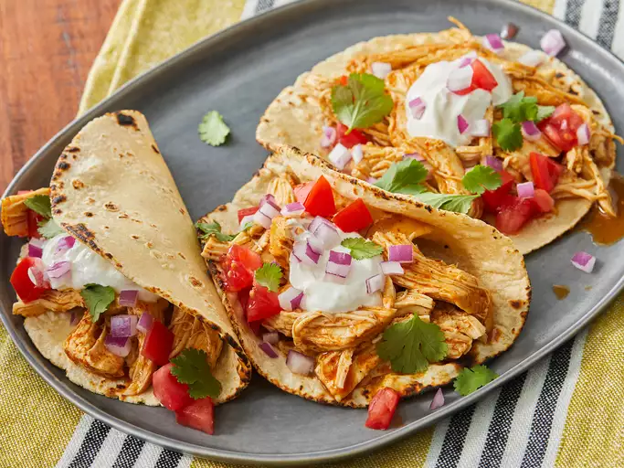

Home
Chicken Tacos

Description
This slow cooker chicken tacos recipe is easy to make with just 3 ingredients for flavorful, super tender, shredded chicken. Spoon the chicken into warm tortillas for a very tasty meal any day of the week.
Ingredients
- 1 cup chicken broth
- 3 tablespoons taco seasoning mix
- 1 pound skinless, boneless chicken breast
Steps
- Gather all ingredients
- Combine chicken broth and taco seasoning mix in a bowl.
- Place chicken in a slow cooker. Pour chicken broth mixture over chicken.